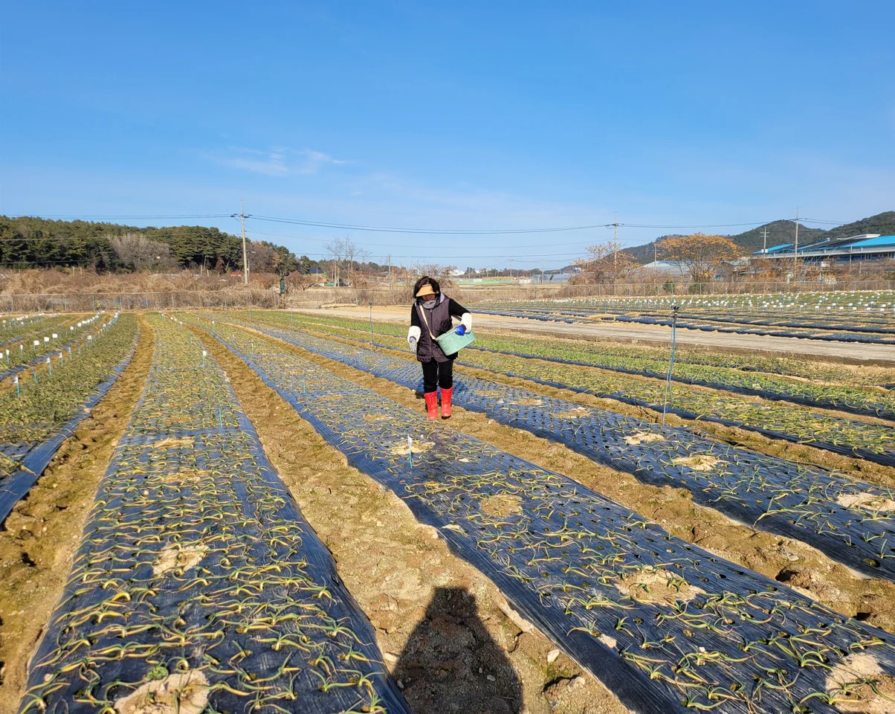

여수 생분해성 멀칭필름 지원｜자부담과 작기 적합성 함께 비교

피복 재배 참고 사진. 사진 속 필름의 생분해 인증·여수 지원 자격은 확인되지 않았습니다.
여수시 밭작물 생분해 필름 지원 신청은 12월 11일까지입니다. 보조 비율만 보지 말고, 내 작물의 재배기간 동안 필름이 유지되는지와 지원 대상 제품인지 함께 확인하세요.
시비·농협·자부담을 나눠 봅니다
첨부 사업계획은 시비 30%·농협 30%·자부담 40%, 총사업비 6,300만원, 농가별 최대 2ha를 안내합니다. 지원단가는 ㎡당 170원 범위이며 실제 롤 가격과 지원 인정액을 확인해야 합니다. 예산 확정과 신청량에 따라 내용·자부담이 달라질 수 있으므로 40%를 확정 계약 조건으로 단정하지 마세요.
1,000㎡를 가정한 자금계획
지원 인정액이 단가 상한으로 계산돼 1,000㎡×170원=17만원이고 40%가 적용된다면 농가 부담은 6만 8천원입니다. 이는 단가·비율을 모두 충족한다는 가정입니다. 면적 산정, 롤 규격, 구매가격, 초과 비용, 농협 참여 조건에 따라 실제 부담이 달라집니다. 구입 전에 농지 소재지 읍면동에 대상자 선정과 구매 절차를 확인하세요.
| 비교 기준 | 제품 A | 제품 B |
|---|---|---|
| 지원 자격 | 제품명·인증번호 ___ | 제품명·인증번호 ___ |
| 작기 적합성 | 작물·피복기간 ___ | 작물·피복기간 ___ |
| 실제 부담 | 가격−확정 지원액 ___ | 가격−확정 지원액 ___ |
| 관리·처리 | 포설·사용 후 지침 ___ | 포설·사용 후 지침 ___ |
지원받는 제품과 재배에 맞는 제품은 각각 확인합니다
사업계획은 환경표지 인증제품 또는 공고에서 정한 유기농업자재 관련 제품 조건을 제시합니다. 정확한 제품명·인증번호·유효 여부와 지원 인정 여부를 담당 창구에서 확인하세요. 농촌진흥청은 일부 필름이 재배 중 일찍 붕괴하는 문제와 내구성 개선 연구를 소개했습니다. 제품의 두께·폭, 여름·겨울 작기 적합성과 사용·처리 지침을 비교해야 합니다.
분해 속도를 모든 밭에서 같다고 기대하지 마세요
토양 수분·온도, 제품 재질과 사용 조건에 따라 유지·분해 양상이 달라집니다. 소면적 시험 기록이나 같은 작기·지역의 사용 사례를 확인하고, 일반 비닐과 혼합되지 않도록 자재 이력을 남기세요. 이 글의 참고 사진은 피복 재배 모습이며 지원 대상 생분해 제품의 증명이 아닙니다. 별도로 안내된 다음 해 다른 보조사업과 이번 접수를 합쳐 해석하지 마세요.
작업 전 점검표
- 제품 인증과 시 지원 대상 여부를 확인했다
- 면적·롤 규격·초과 비용을 계산했다
- 선정 통지와 예산 확정 전 구입 절차를 확인한다
구매 단가 절감과 회수 노동 절감은 별도로 계산하고, 작기 중 피복 유지 실패 위험도 함께 비교하세요.